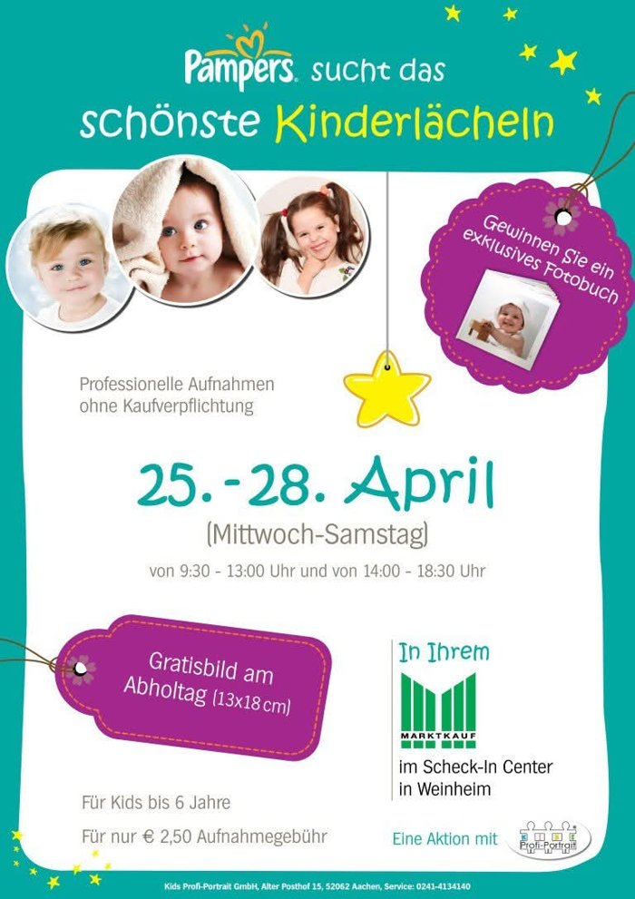
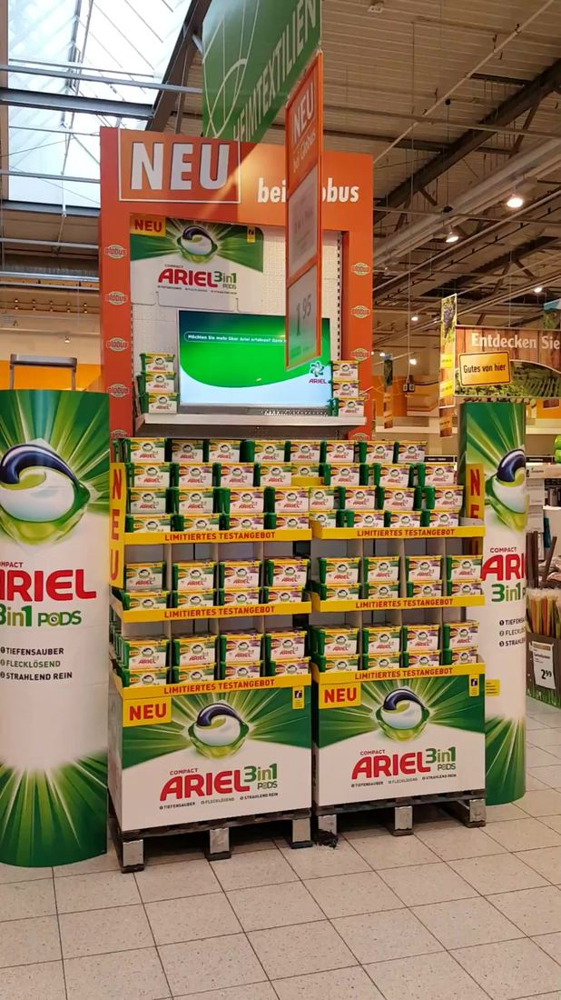
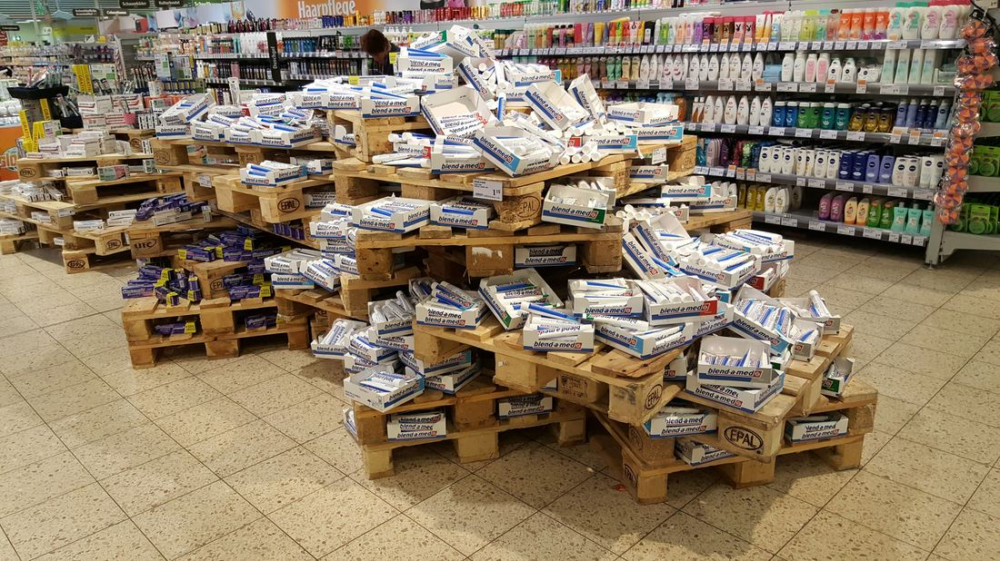
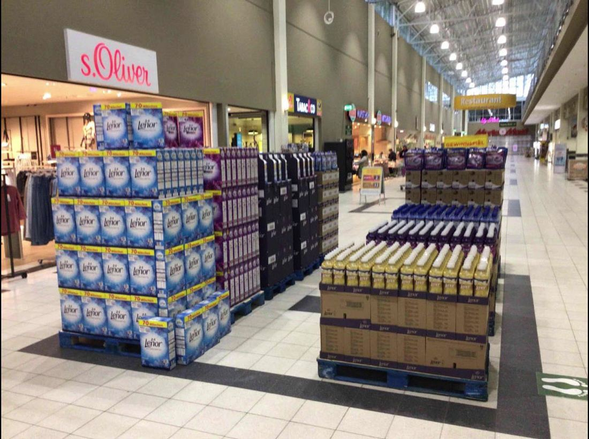

Bewerbung · Bezirksleiter im LEH · Region Mannheim
Marc WebersdorferMannheim kenne ich. Das Regal auch.
Nr. 1Lenor-Launch DE
Top 10Verkäufer national
250 %LKW-Aktionsziel

12 Jahre war ich als Field Account Manager bei Procter & Gamble im Lebensmitteleinzelhandel unterwegs – mit eigenem Gebiet von Mannheim und Heidelberg bis Kaiserslautern und ins Saarland, später auch im Rhein-Main-Gebiet.
Sortimentslücken erkennen, Neuprodukte schnell ins Regal bringen und selbstständige Händler auch bei Kann-Listungen überzeugen.
Beleg: 90 % Distribution bei Produkteinführungen in 2 statt 4 Wochen · Gillette-Freiwahl: rund 15–20 Edeka-Händler angesprochen, die Mehrheit hat umgesetzt.
Regalqualität, Zweitplatzierungen und Aktionsflächen so umsetzen, dass Marken im Sichtfeld stehen – und Talondurchgänge mit Mengen und Platzierungen verhandeln.
Beleg: Rang 1 in Deutschland mit 120 Zweitplatzierungen beim Lenor-Launch · 5 statt 1–2 LKW-Aktionen.
Vertriebskennzahlen über Quartals- und Monatspläne steuern, Potenziale und Standorte analysieren, Bestellmengen am POS führen und Out-of-Stock vermeiden.
Beleg: Top 10 Deutschland (Waschmittel) · Top 3 Region Südwest bei SBD-Compliance und Launch-Volumen Zahnpflege.
Vertriebsstrategien gemeinsam mit dem Key Account Management in der Region umsetzen, Schulungen und Workshops durchführen und Wissen im Team weitergeben.
Beleg: „Mission Possible – We Can Award" für eine bereichsübergreifende Team-Initiative.
Selbstständige Kaufleute mit mehreren Märkten denken in Umsatz pro Markt – nicht in Kategorien. Genau mit ihnen habe ich bei Procter & Gamble gearbeitet: mitten im Bezirk, um den es bei Danone geht.
Center in Mannheim (2), Heidelberg (2), Weinheim, Viernheim und Mutterstadt (ehemals Real).
Später zusätzlich die Märkte im Raum Frankfurt und Mainz.
Märkte in Speyer (2), Frankenthal (2), Haßloch und Bad Dürkheim.
Zusätzliche Distribution für gelistete Artikel – Markt für Markt.
Maßnahmen pro Markt mit dem Kaufmann abgestimmt, bei einzelnen Kunden mit eigenen Jahresplanungsgesprächen.
Vereinbarungen, die für mehrere Standorte eines Unternehmers gleichzeitig gelten.

Vier Tage Pampers-Fotoshooting mit Profi-Fotograf im Marktkauf des Scheck-In Centers Weinheim – eine Aktion, die junge Familien in den Markt holt und dem Kaufmann Frequenz bringt.
Für Danone heißt das: Fruchtzwerge, Actimel & Co. sprechen dieselben Familien an. Wer gemeinsam mit dem Kaufmann die Potenziale im Kühlregal hebt, entwickelt alle seine Märkte gleichzeitig.
Aufmerksamkeit erzeugen, wo der Kunde entscheidet – vom Gondelkopf über die Aktion im Einkaufszentrum bis zum Verkauf aus dem Kofferraum. Jede Maßnahme mit dem Händler abgestimmt, jede mit einem Ziel: mehr Abverkauf im Markt.






Ich habe in meiner Laufbahn mehrfach die Kategorie gewechselt – und jedes Mal war es im Kern derselbe Job: Verfügbarkeit sichern, Platzierung gewinnen, Händler überzeugen. Das Kühlregal ist für mich neu. Die Disziplin dahinter nicht.
Danone-Marken kennt der Handel, und Verbraucher suchen sie gezielt – eine gute Ausgangslage für jedes Gespräch mit einem Marktleiter. Den Bezirk dafür kenne ich schon.
Weil mir dieser Teil des Vertriebs am meisten liegt: raus zum Kunden, Märkte eigenverantwortlich entwickeln und am Regal sehen, was aus einer Vereinbarung tatsächlich geworden ist. Ein größerer Titel ist nicht mein Ziel. Ich suche eine Aufgabe, die ich langfristig ausfülle – in einer Region, die ich kenne, bei Kaufleuten, mit denen ich schon gearbeitet habe.
Die ersten 100 Tage: verstehen, aktivieren, verankern.
25+ Jahre Erfahrung im FMCG-Vertrieb, im Aufbau starker Handelspartnerschaften und in der Zusammenarbeit mit leistungsstarken Verkaufsteams im Handel. Mein Schwerpunkt: Potenziale auf der Fläche sichtbar und messbar machen. Diplom-Betriebswirt (FH), International Business, FH Darmstadt.
Field Account Manager (Mannheim · Heidelberg · Kaiserslautern · Saarland) · Category Management · Market Planning · 23 Jahre bei Procter & Gamble, davor Intersnack und Wolf Bergstrasse, seither B2B-Vertrieb und digitale Weiterqualifizierung
Ich freue mich darauf, Ihre nächste Erfolgsgeschichte im Handel mitzugestalten.
23 Jahre Procter & Gamble, davor Intersnack und Wolf Bergstrasse.